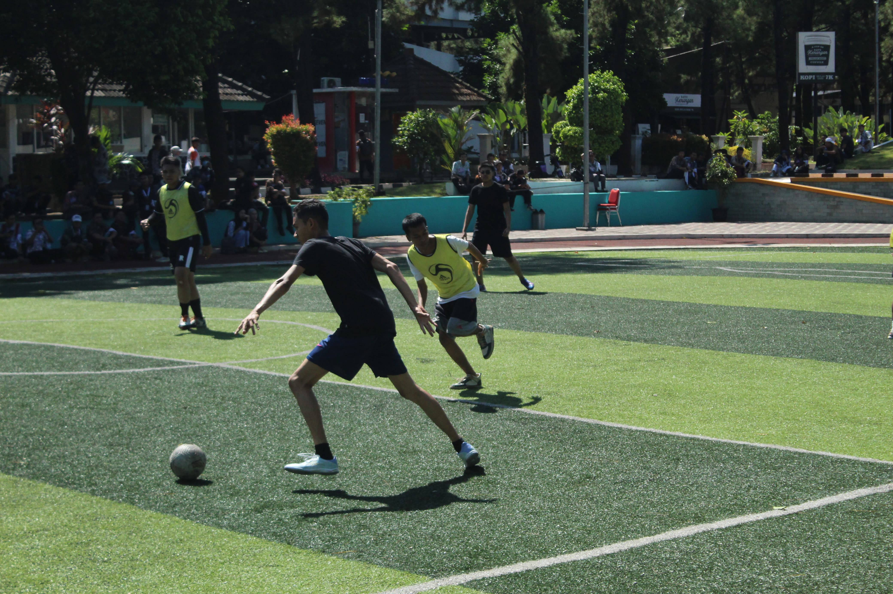
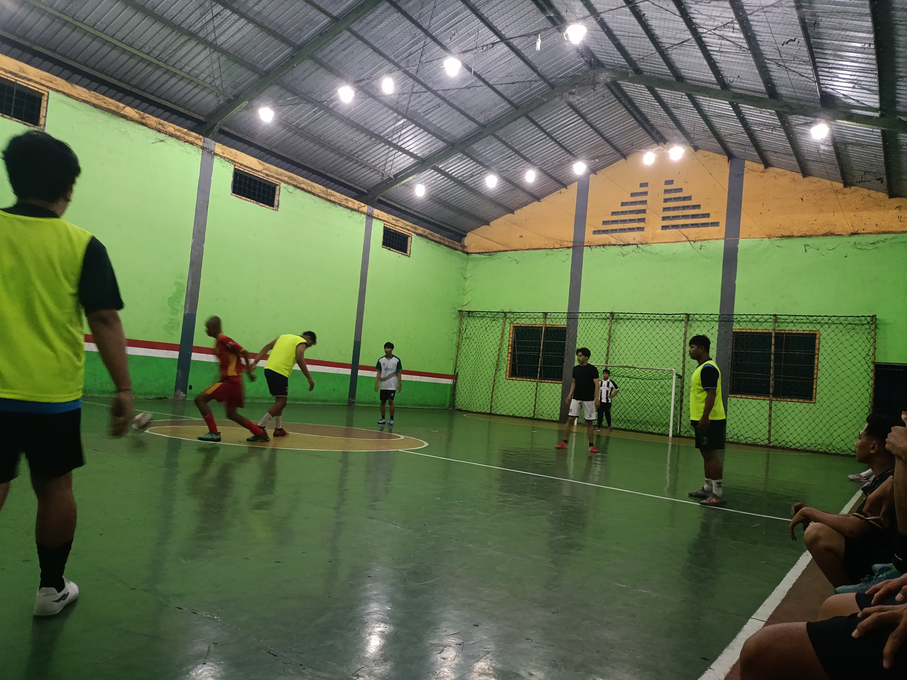
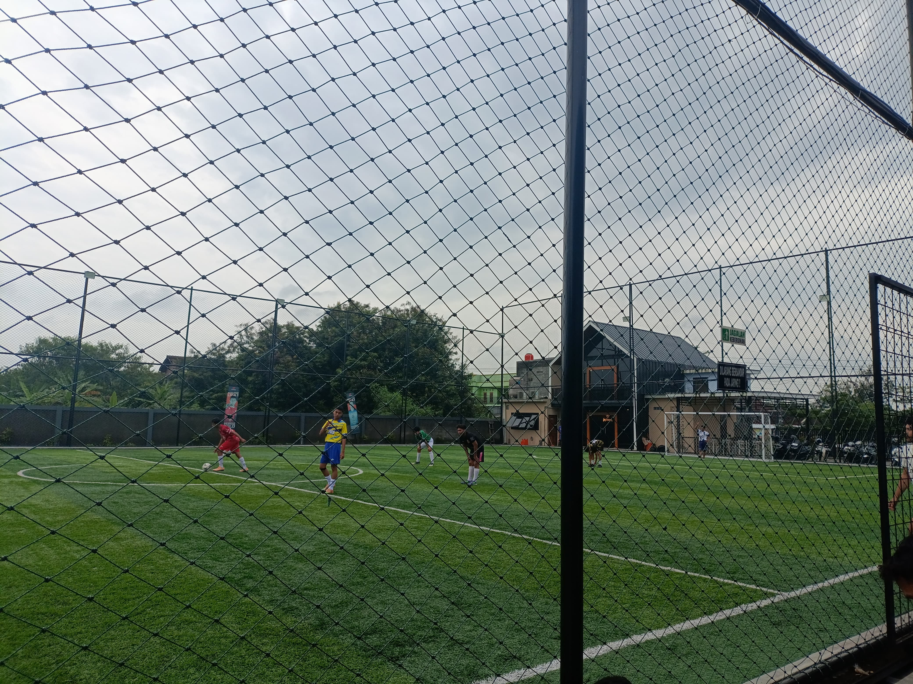
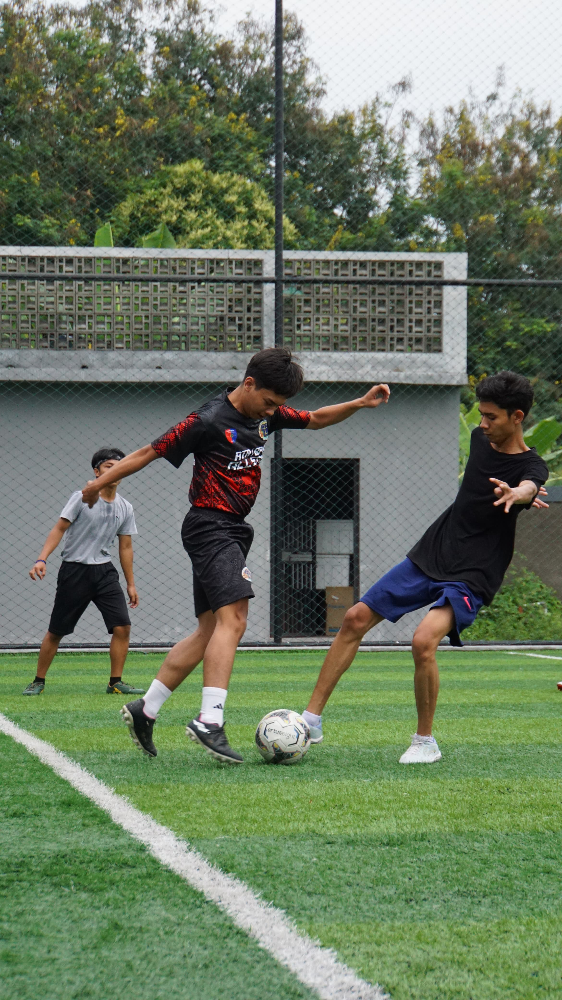
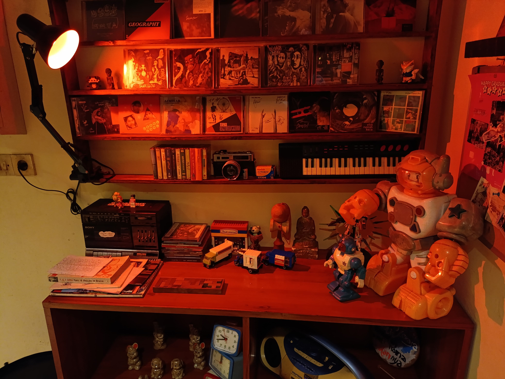
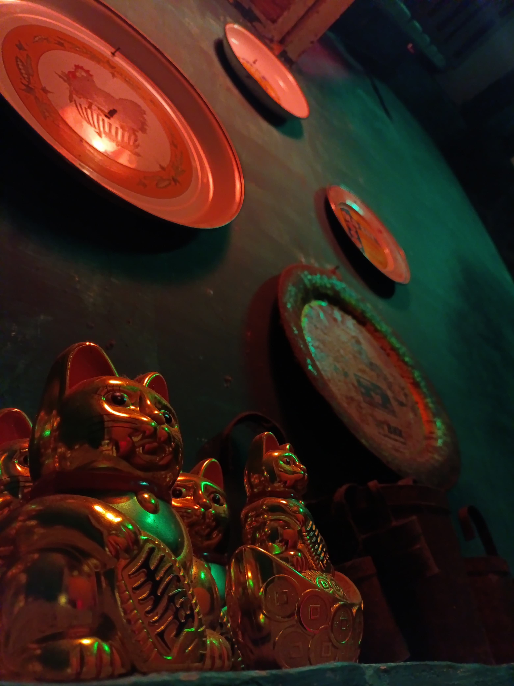
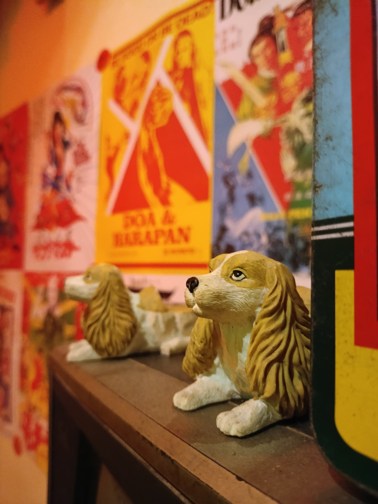
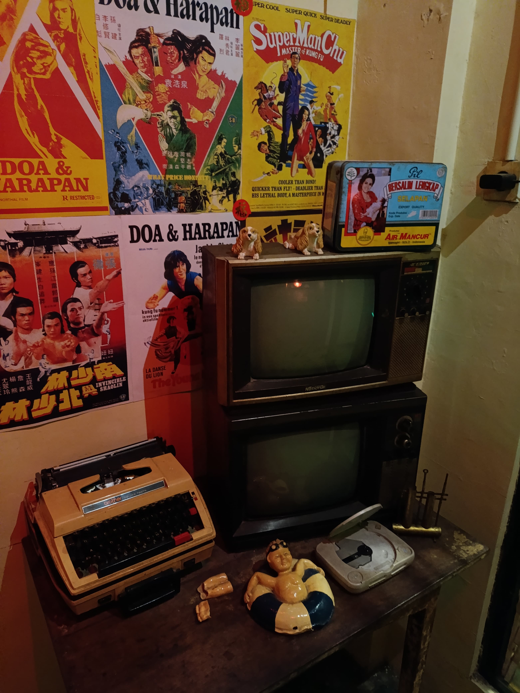

This is My Hobbies!
Futsal / Football
Olahraga yang menjadi kesukaan dan hobi untuk saya disaat luang yaitu adalah futsal atau bermain bola, olahraga ini seru karena dimainkan secara berkelompok dan memerlukan kerjasama tim untuk memenangkannya. Saya memang tidak terlalu jago saat bermain bola, namun saya merasa senang saat memainkannya, apalagi ketika saya berhasil mencetak goal. berikut merupakan foto - foto di gallery saya saat sedang bermain bola.




Photograph
Fotografi adalah hal yang saya sukai, saya suka melihat object" yang terlihat indah dan ingin mengabadikannya ke dalam suatu foto. Saya jarang menggunakan kamera profesional, kebanyakan foto yang saya ambil adalah hasil dari kamera HP dan diambil secara spontan, saya hanya suka mengabadikan suatu moment, namun saya tidak terlalu minat untuk memikirkan keribetan dunia fotografi yang penuh dengan teori dan alat. berikut merupakan beberapa foto yang saya ambil di suatu tempat di kota solo.




Playing games
Bermain game adalah hal saya suka lakukan disaat saya malas buat keluar rumah, namun gabut di kamar. banyak jenis game yang saya suka mainkan, baik itu game PC ataupun game HP. Kebanyakan game yang saya mainkan adalah game berjenis MOBA, FPS, ataupun battle royale, seperti clash royale, valorant, pubg mobile, mobile legends, dll.
Singing
Bernyanyi merupakan hobi saya yang diturunkan dari ayah saya, meskipun suara saya tidak terlalu bagus, namun saya tetap menyukai moment saat menyanyikan suatu lagu, terlebih ketika lagu tersebut mengingatkan saya terhadap suatu event yang terjadi pada saya di masa lampau. Bernyanyi bisa mengembalikan memori" lama yang sudah terpendam di dalam pikiran, serta bisa menjadi mood booster ketika badmood.